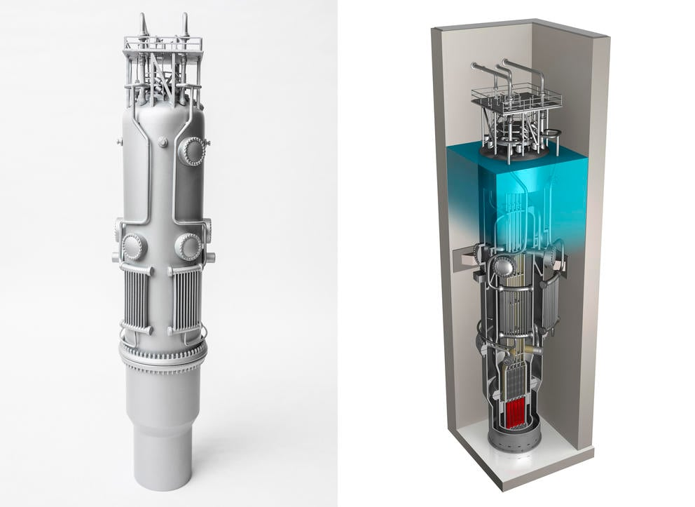

Az Erőmű Főbb Tulajdonságai
Információ: Az alábbi tartalom általános jellegű, inspirálódva a modern kis moduláris reaktor (SMR) technológiákból. A konkrét adatok eltérhetnek.
Általános Leírás
A Borsod AtomTech Zrt. által tervezett sajószentpéteri nukleáris erőmű a legújabb generációs kis moduláris reaktor (SMR) technológián alapulna, amely kiemelkedő biztonságot, rugalmasságot és alacsonyabb szén-dioxid-kibocsátást kínál. Célunk a régió tiszta és megbízható energiaellátásának biztosítása.
Főbb Műszaki Jellemzők (NuScale Power Module alapján)
- Technológia: Kis Moduláris Reaktor (SMR), nyomottvizes (PWR) kialakítás
- Modul teljesítménye: Egyenként kb. 77 MWe (villamos)
- Telepített blokkok (tervezett): 2 modul (Sajószentpéter 1 és 2), összesen kb. 154 MWe
- Biztonság: Passzív biztonsági rendszerek, amelyek külső beavatkozás vagy áramellátás nélkül is képesek a reaktort biztonságos állapotban tartani.
- Moduláris felépítés: Gyárilag készített modulok, amelyek csökkentik az építési időt és költségeket.
- Rugalmasság: A modulok egymástól függetlenül üzemeltethetők és karbantarthatók.
Környezeti Hatások
Az SMR technológia jelentősen hozzájárul a dekarbonizációs célok eléréséhez. Kisméretű lábnyoma és a fejlett biztonsági jellemzők minimalizálják a környezeti terhelést.
További részletes műszaki információkért és a technológia mélyebb megértéséért kérjük, látogasson el a NuScale Power hivatalos oldalára:
NuScale Power Module - Termékleírás